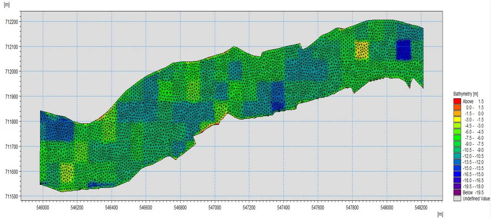
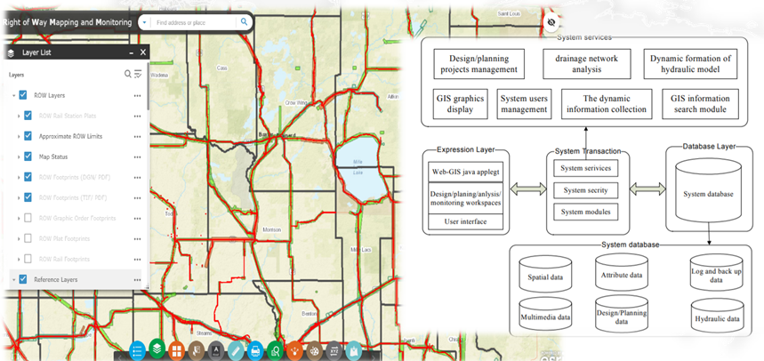
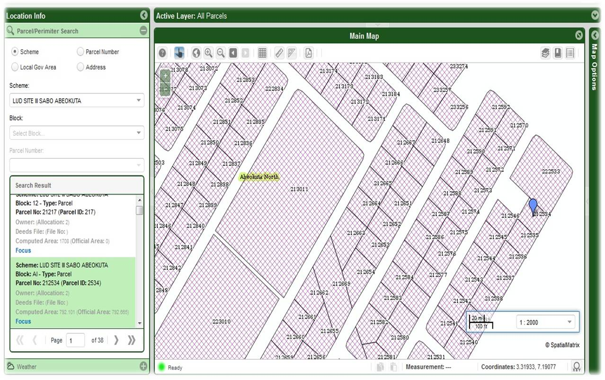
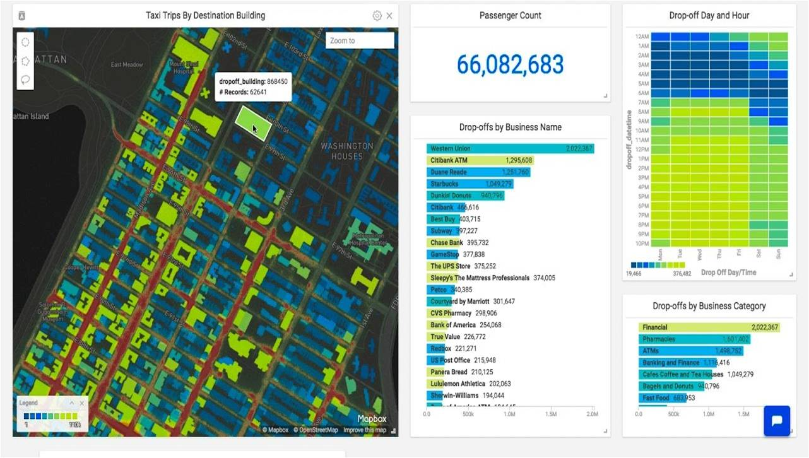
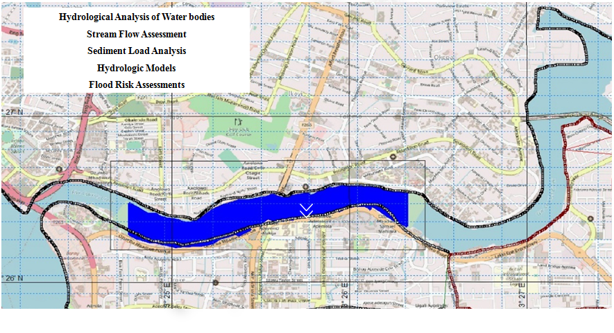
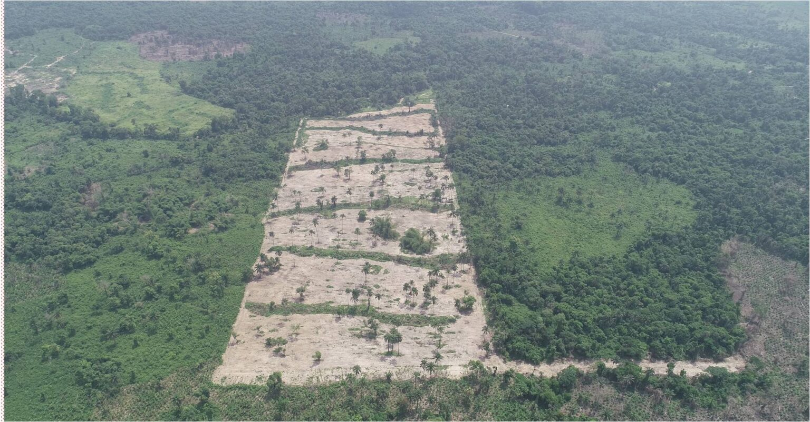

Spatial Data Analytics & Modelling
We deliver innovative solutions that are cost effective and efficient to meet the needs of our clients. We set up solutions that are tailor-made for our clients despite their diverse needs.Our clients retain our services because of our impeccable standards and delivery.
SPATIAL DATA ANALYTICS & MODELLING
At Kartgis Geospatial Solution, we provide novel and innovative solutions to spatial data analytics and modelling. Integrating Geospatial technology and Artificial intelligence, our models and products have no rivals. Excellence is at the core of our services. With novel products in Engineering, Hydrology and Hydrographics, Transportation and Traffic Management, Town Planning & Telecommunications among others, Kartgis Geospatial Solution dives deep to produce Magic! We specialize in Business Intelligence and market Fit Analysis, Spatial Decision Support Systems, Geospatial Intelligence, Database management and Bespoke Data Analytics using Machine Learning and Artificial Intelligence
LARGE SCALE DEVELOPMENT PLANNING PROCESSES
With the combined experience of our Management team in curating planning solutions for the over 30 years, our planning process engagements remains flawless and impeccable with astonishing records of successful implementation of Planning projects and preparing Development Guides, Masterplans and Urban Dynamic Modelling. At Kartgis Geospatial Solution, We understand that Planning effectively hinges on the quality of data available. Thus, our team of professional planners and Geospatial Experts are available to deliver even the most impossible of planning tasks to your organization. For Surveillance, Site inspections, Layout Mapping, Site selection, Environmental Impact Assessments, Land use Analysis, Creation and Update of Masterplans etc. Kartgis Geospatial Solution remains your best bet!
UPGRADE & INTEGRATION OF DRONES INTO MONITORING AND INSPECTIONS PROCESS – LAGOS STATE BUILDING CONTROL AGENCY
When buildings started collapsing all over the city, the leadership of the Lagos State Building Control Agency looked to us for solutions to the challenges of building control, infrastructure monitoring and risk assessments. We sat with the team and identified the solution in their challenges.
RIGHT OF WAY MAPPING
What do you do when you are tasked to delineate the right of way spanning across 38km of high traffic, busy Lagos road? You either go on measuring with tape for six months or employ OEA for 3 weeks. With our expertise in mapping, drones, surveying and engineering, delivering a right of way mapping project is as delivering a photograph with a smile. PAINLESS!
BATHYMETRIC SURVEY OF THE LAGOS LAGOON
With a combination of High Resolution Imageries, Insitu Data and Artificial Intelligence, our Bathymetric Surveys of the Shallow – Near Deep Water bodies reflects the rigorous methodologies we employ in service delivery. With a 98% model fit and accuracy, our product remains the most cost effective method of carrying out large scale underwater and hydrographic surveys.
HYDRODYNAMIC MODELLING OF THE FIVE COWRIE CREEK
BASE STATION MODELLING & TOPOGRAPHIC ASSESSMENT
Our company specializes in generating highly accurate terrain /topographic measurements of areas of interest. Our platform has the ability to produce both surficial and sub-surface measurement as well as underwater topography. Our drones are outfitted with varying sensors in the visible, near infrared and thermal spectrum to deliver to your project, the most novel of datasets
Enterprise Geospatial Intelligence Systems
Enterprise Real Estate Management Solutions
Enterprise Transport Management Solutions
HYDROLOGIC ANALYSIS
NDVI / CROP HEALTH
COVID-19 GEOSPATIAL RESPONSE & LIVE PREDICTION DASHBOARD
The incidence of the Coronavirus pandemic [Ncov-19] in Nigeria required a robust system for mapping spatial spread of the virus, monitoring cases and as shown in our case, integration of a live prediction model to predict the rate of transmission and case confirmation with an 80% accuracy.
BUSINESS INTELLIGENCE AND MARKET FIT ANALYSIS
Business Intelligence is about connecting business decision making to facts about the business and its environment. We take a deep dive to understand the data beneath your business and generate insights to help you make better informed decisions.

FARM MANAGEMENT / CROP MONITORING / ASSESSMENT
Monitoring your farm and the health of your crops has never been easier and more cost effective. OEA consults deploy our state of the art GPS and UAVs in monitoring, measurements and mapping of your farmlands. Our expert analysts are on hand to derive crop health, phenology and crop extent products from the satellite data collected.